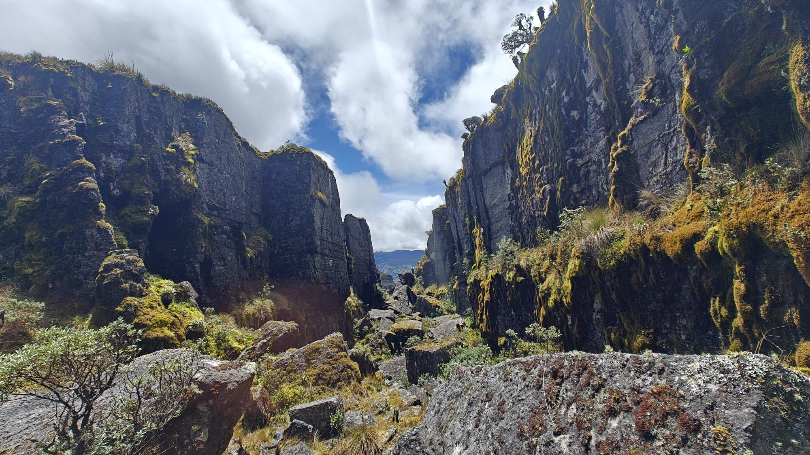
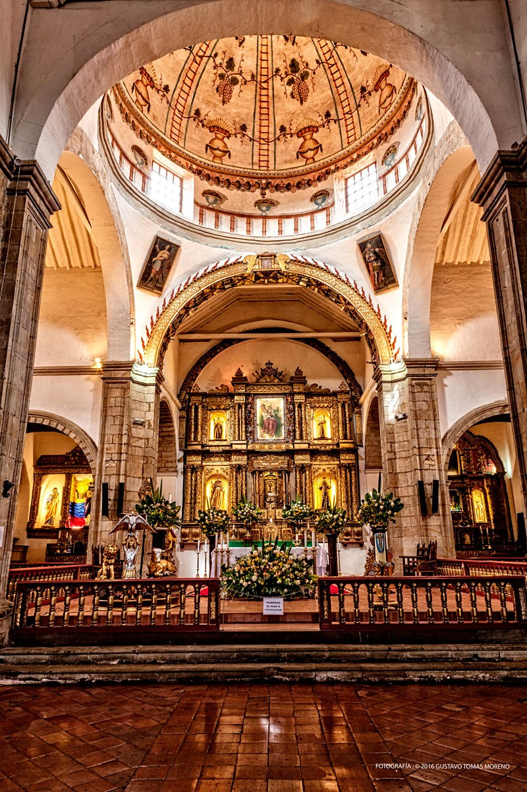
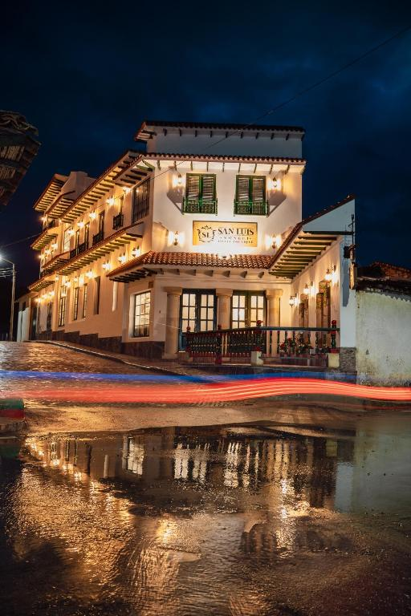

Naturaleza, historia y tranquilidad en un solo lugar
Monguí es uno de los destinos turísticos más encantadores de Boyacá gracias a la combinación de paisajes naturales, arquitectura colonial y un ambiente de tranquilidad que invita al descanso. Sus montañas, senderos ecológicos y el cercano Páramo de Ocetá ofrecen experiencias únicas para quienes buscan contacto con la naturaleza y momentos de paz lejos de la ciudad.
Caminar por sus calles empedradas, observar sus casas blancas con balcones tradicionales y disfrutar del clima fresco permite a los visitantes vivir una experiencia auténtica en uno de los pueblos patrimonio más representativos de Colombia.

Entre los principales atractivos turísticos se encuentran la Basílica Menor de Nuestra Señora de Monguí, el histórico Puente de Calicanto y el antiguo convento franciscano, construcciones que conservan la memoria arquitectónica y religiosa del municipio.
Además, los recorridos hacia el Páramo de Ocetá permiten admirar frailejones, miradores naturales y una gran diversidad de flora propia de los ecosistemas de alta montaña, convirtiéndose en una experiencia inolvidable para los amantes del ecoturismo y la fotografía.

Los turistas pueden disfrutar de caminatas ecológicas, recorridos históricos, compra de artesanías locales y degustación de la gastronomía típica boyacense. También es posible encontrar hospedajes acogedores y espacios ideales para el descanso en familia, en pareja o con amigos.
La hospitalidad de sus habitantes hace que cada visitante se sienta bienvenido, generando recuerdos especiales y el deseo de regresar para seguir descubriendo la riqueza cultural y natural de Monguí.
